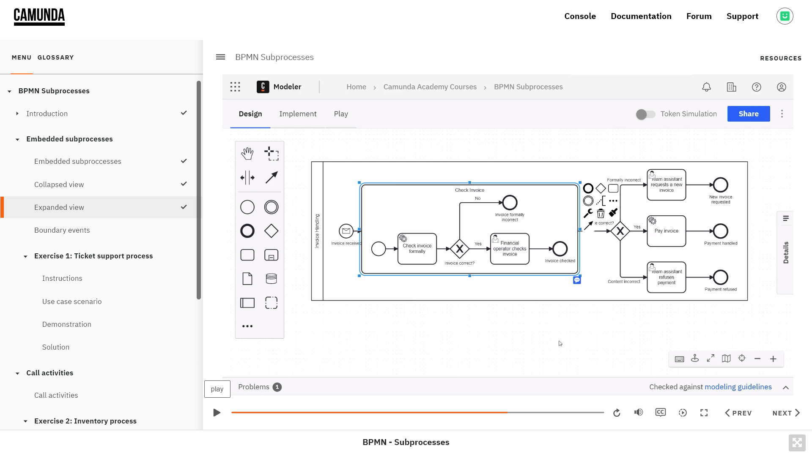
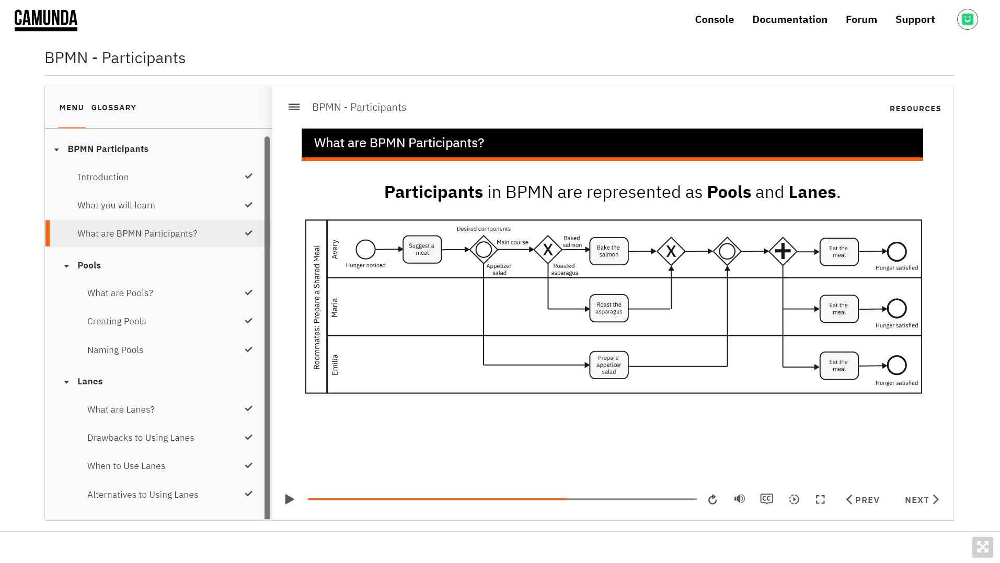

Hi! I’m Tara. I'm a Senior Instructional Designer / eLearning Developer with 7+ years of experience creating engaging, effective learning content for internal and customer enablement. As a reliable team member who is dependable and communicative, I am trusted to manage projects from start to finish and have received praise from coworkers for being collaborative and easy to work with. I enjoy partnering with subject-matter experts to come up with creative solutions for conveying technical concepts. My skills at time management and organization ensure that I always deliver on time and under budget, and I have a proven track record of positively impacting the customer experience to help support business objectives.
Asana
Confluence & Jira
Adobe After Effects
Adobe Audition
Adobe Illustrator
Adobe Premiere
Adobe Photoshop
Articulate - Storyline & Rise
Techsmith - Camtasia & SnagIt
Microsoft Office
Google Suite
Video production
Audio production
Motion design
Process development
Project management
LMS management
Logo design
Web design
HTML & CSS
SCORM
BPMN Subprocesses (Camunda Academy) 
A beginner-level course introducing BPMN subprocesses. Built using Articulate Storyline.
BPMN Participants (Camunda Academy) 
A beginner-level course introducing BPMN participants. Built using Articulate Storyline.
Configure WinRM Security (Puppet)
A beginner-level course introducing WinRM Security. Built using Articulate Storyline.
Puppet Enterprise 2019.8 Console Overview

A walkthrough of the Puppet Enterprise 2019.8 console features. Built with Articulate Rise.
Bolt Basics on Linux (Instruqt)
Interactive, browser-based, hands-on labs for learning Puppet code.
Learners reported an average 4.58 out of 5 user satisfaction rating.
92% of learners got the information they needed.
85% of learners confident about implementing solution.
Puppet Enterprise curriculum (Puppet Education)
Co-developed six one-day instructor-led courses, covering beginner to advanced concepts.Resulted in 30%+ increase in NPS scores for instructor-led training.
DEGREE:
B.A. Multimedia Production — Evergreen State College
CERTIFICATIONS:
Build Your Drupal Skills Certificate — Linkedin Learning
Google UX Design Professional Certificate — Coursera
Graphic Design Foundations Certificate — Linkedin Learning
Explainer Camp Certificate — School of Motion
After Effects Kickstart Certificate — School of Motion
eLearning Instructional Design Certificate — ATD
“Tara is not only a skilled instructional designer capable of translating complex concepts into easy-to-understand, engaging graphics, videos, and courses; she's also an effective and reliable project manager whom you can trust to get projects done well and on deadline. When I was the senior manager of technical education at Puppet, Tara worked with my team of technical training engineers to create an entire six-course, outcome-driven, instructor-led curriculum that transformed how Puppet delivers customer education. Customers regularly commented on how the course materials and graphics Tara designed helped them to finally understand concepts that they had long struggled to grasp. On top of her exceptional work, Tara is one of those good humans who is always willing to lend a hand when you need it and who can work well with anyone. I hope I get the opportunity to work with her again.”
- Nikki McDonald
Senior Advocacy Program Manager at AWS
“Tara is an exceptional instructional designer at Puppet. She and I have worked closely on many projects over the years, and she always brings an intense curiosity for understanding the technology that we build our training materials around at Puppet. Tara's understanding of the Puppet technology has enabled her to bring multiple types of media, written content and other assets to our training materials to enhance the learner experience. Tara also has a great ability to take raw diagrams from engineers and turn them into compelling imagery to embed in our courses. The Puppet technology is extremely complex with many components, and Tara has been able to distill it down to compelling images and animations to enable our users to understand the software more effectively. I highly reccommend Tara for instructional design positions and other positions with a need to build visuals and other assets to help communicate technical concepts.”
- Greg Larkin
Senior Services Delivery Engineer at Github
“Tara's amazing. I've known and worked with her for over a year at Puppet, and I've come to admire both her professional work ethic and her breadth of knowledge in her field. One of Tara's defining skills is the ability to take difficult technical subjects and break them down into visually appealing diagrams and images. Another is her ability to come up with just the right visual metaphor for technical material that deftly captures the essence of the subject at hand. And she is a joy to work with! Patient, curious and and always unflaggingly polite and personable. Tara has an empathy and passion that you can feel, and it shines through everything she does. Please consider her carefully. She is an asset to any team and any team would be lucky to have her.”
- Tom Chisholm
Principal Training Solutions Engineer at Puppet